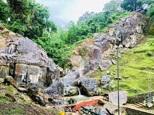
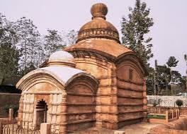
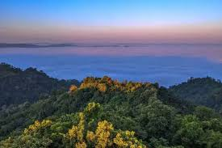
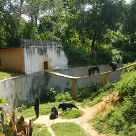
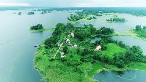
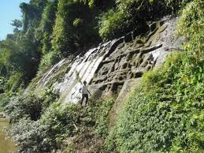
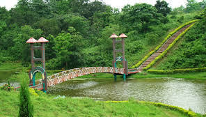

Agartala
Ujjayanta Palace: Former royal palace now housing a museum and gardens.
Neermahal: Lake palace built in the middle of Rudrasagar Lake.
Tripura Government Museum: Museum showcasing tribal culture, sculptures, and artifacts.
Unakoti

Unakoti: Archaeological site with rock-cut sculptures and ancient temples.
Pilak

Pilak: Archaeological site with Buddhist and Hindu sculptures and ruins.
Jampui Hills

Jampui Hills: Hill station known for its pleasant climate and orange orchards.
Vanghmun Village: Scenic village offering panoramic views of the hills.
Sepahijala Wildlife Sanctuary

Sepahijala Wildlife Sanctuary: Wildlife sanctuary with diverse flora, fauna, and a zoo.
Udaipur
Tripura Sundari Temple: Hindu temple dedicated to Goddess Tripura Sundari.
Dumboor Lake

Dumboor Lake: Natural lake known for its scenic beauty and water sports.
Chabimura

Chabimura (Devtamura): Cliffs with rock carvings and scenic views of Gomati River.
Kalapania Nature Park

Kalapania Nature Park: Nature park with wildlife, trekking trails, and panoramic views.
Festivals and Cultural Events
Garia Puja: Traditional tribal festival celebrating worship of Lord Garia.
Kharchi Puja: Hindu festival dedicated to Tripura's royal deities.
Adventure and Nature Activities
Trekking and Hiking: Opportunities in the hills and forests of Tripura.
Boating and Water Sports: Activities at Dumboor Lake and other water bodies.